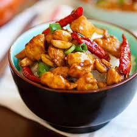

Kung Pow Chicken
Back

Description
This dish is absolutely delish. We will make your taste buds absolutely melt at this once in a life time dish
Ingredients
- 12 oz. (340 g) boneless & skinless chicken breasts
- 3 tablespoons roasted peanuts
- 6-8 dried red chilies, seeded and cut into halves
- 3 tablespoons oil
- 5 slices peeled fresh ginger
- 2 cloves garlic, sliced diagonally
- 1 stalk scallion, cut into rings
Marinade
- 1 tablespoon corn starch
- 2 teaspoons soy sauce
- 1 tablespoon Chinese Shaoxing rice wine, optional
- 1 teaspoon oil
Sauce
- 1 1/2 tablespoon soy sauce
- 1 teaspoon dark soy sauce
- 1 teaspoon sugar
- 1/4 teaspoon Chinese black vinegar
- 2 tablespoons water
- 1 teaspoon corn starch
Method
- Cut the chicken meat into small cubes, rinse in water,
pat dry with paper towels and marinate with the ingredients
above for 30 minutes.
- Mix the sauce ingredients in a small bowl and set aside.
- Heat up a wok with one tablespoon of oil and stir-fry the marinated chicken
until they are 70% cook. Dish out and set aside. Clean the wok
and add in the remaining 2 tablespoons of oil until it's fully heated.
Add in the ginger and garlic slices and do a quick stir before adding
in the dried red chilies.
- Stir fry> the dried red chilies until aromatic and smell spicy, then add
in the chicken meat. Do a few quick stirs before adding in the roasted peanuts.
Add the sauce and stir continuously until the chicken meat is nicely coated with
the sauce.Add in the scallions, stir to
combine well with the chicken, dish out and serve immediately
with steamed rice.